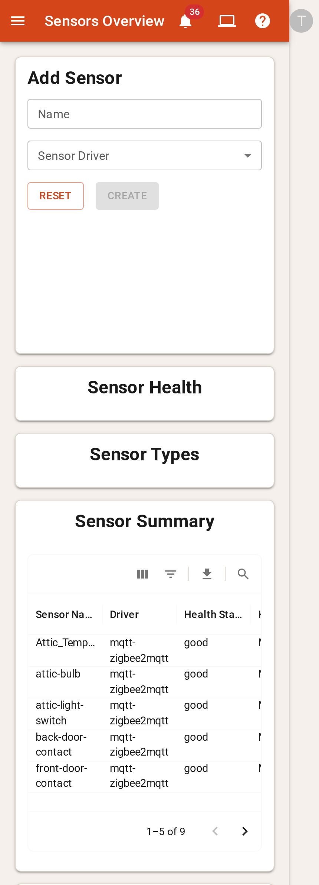
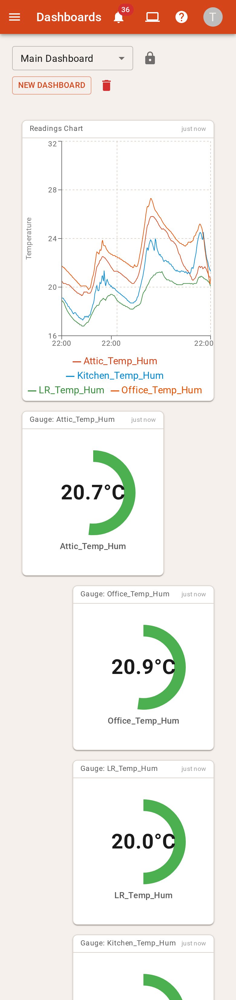
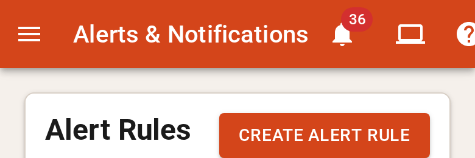
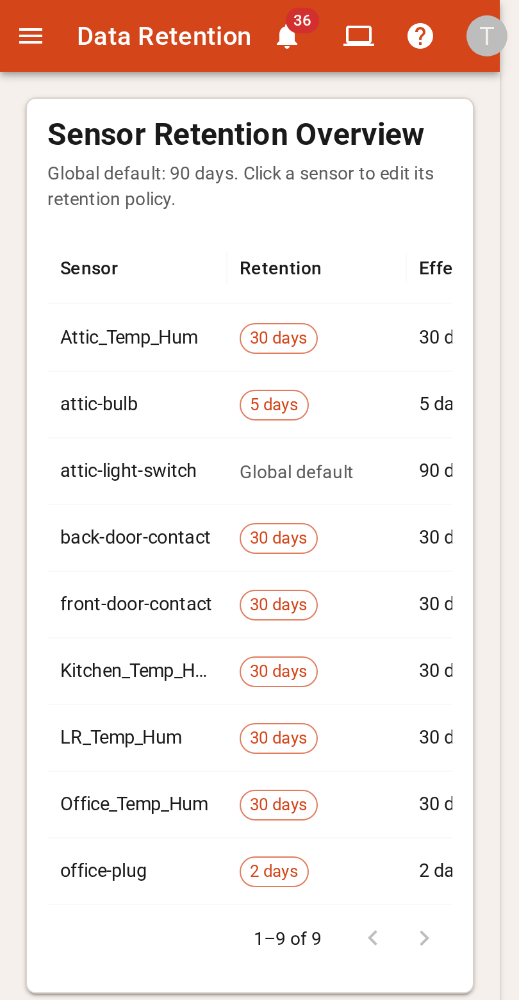
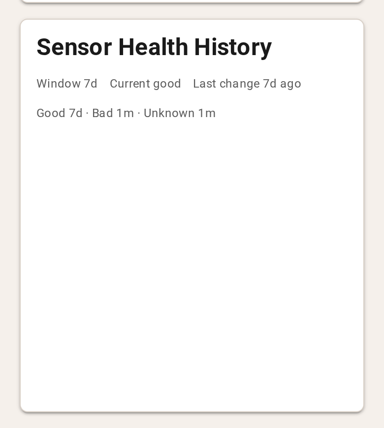

A layout system that cannot break mobile
You want to stop fixing mobile piecemeal and get one central, consistent system that makes new components safe on phone and desktop by default. This page has what I found in the code and on your live instance at phone width, then the decisions I need from you. This is the record of the interview. Every decision is shown with the option that was agreed.
The ask, and where I disagree with it
Steelman
Layout decisions are scattered through about 500 sx blocks and 48 isMobile ? ternaries. Nobody can predict how a change behaves at another width, so every fix adds another override. Move every layout decision into one small, named vocabulary that owns responsiveness. Then feature components only compose, and a component built from that vocabulary is correct on mobile without anyone having to think about mobile.
Disagree "Design system" is the wrong target if it means tokens
None of your bugs come from inconsistent colours, spacing or typography. Every one is a layout-contract bug: nothing says who owns a component's height, who is allowed to shrink, or which of the three breakpoint systems applies. A token catalogue plus a component library leaves every one of these bugs in place. The system has to be layout contracts, plus primitives that carry them out, plus enforcement. Enforcement is what makes it "can't break", not just "shouldn't break". Visual tokens are optional on top (see D1).
What would make me wrong: if a large part of the "madness" is visual drift (headings, spacing, colours that differ card to card) rather than things collapsing and overflowing. Typography.tsx does hardcode #666 and 28px, so there is some of this.
What is broken at 390px
Live instance (home.sensor-hub), captured read-only today with Playwright at 390×844, phone emulation

w=3 of 12 on desktop) render at 3 of 4 columns. That is 75% width, pushed alternately left and right, with no room for anything beside them.
minWidth: fit-content, so it can never shrink, and the icons get pushed off the edge. This is why most pages scroll sideways.

You mentioned SensorRetentionCard's grid. SensorRetentionCard has no grid, and nothing imports it: it's dead code. The grid in the screenshot is DataRetentionCard on the Data Retention page. Its column minimums add up to 400px, and it only hides the Driver column at first mount, so resizing the window doesn't update it. I've assumed that's the one you meant.
Five root causes behind all of it
Each is checked against the code. File references are below each one.Charts borrow their height from their neighbours
The pie charts use recharts ResponsiveContainer height="100%", inside a flex:1; minHeight:0 box, inside a card with height:100%. None of these has a height of its own. On desktop, the Grid row stretches every card to match its tallest sibling, the Add Sensor form (which has minHeight: 400), and the chart fills that space. On mobile each card sits alone in its row, so there is no neighbour to borrow from and the chart comes out at 0px tall.
The same pattern breaks the Total Readings grid on mobile, and the Sensor Health History and Readings charts on the sensor page. Those two have only minHeight: 400 on the card, and a minimum height doesn't give height:100% anything to measure against. It likely breaks on desktop too, for any user without manage_sensors: without the Add Sensor card in the row, there's nothing to stretch the pie cards.
components/SensorHealthCard.tsx:17,29,SensorTypeCard.tsx:18,32,SensorHealthPieChart.tsx:31,TotalReadingsForEachSensorCard.tsx:49,69,SensorHealthHistoryChart.tsx:133,ReadingsChart.tsx:103pages/sensors-overview/SensorsOverview.tsx:25(alignItems: "stretch")- Dashboard widgets are fine:
WidgetFramegets a real pixel height from the grid, so these same components work there.
Fixed minimums that ignore the content
AddNewSensor and EditSensorDetails both set height: 100%; minHeight: 400 on a card that stacks its content from the top, so any spare height lands under the buttons. On mobile the 400px minimum stays, and picking a driver adds only a couple of fields, so the gap mostly remains. On the sensor page, Edit Sensor Details also stretches to match the much taller Sensor Info card beside it. Elsewhere, AllSensorsCard passes cardHeight="500px" to both the card and its inner div, so heading + padding + 500px sit in a 500px card. The UI has 86 hardcoded pixel heights in total.
components/AddNewSensor.tsx:17,EditSensorDetails.tsx:23,SensorsDataGrid.tsx:121,125
Nothing is allowed to shrink
The app bar title is minWidth: fit-content and shows the full page title next to five fixed-width icons. DataGrid columns set minWidth values that add up to more than a phone's width (Sensor Summary: 100+100+100+200+80 = 580px across 5 columns, in a card about 330px wide). Nothing in the page shell uses minWidth: 0 or overflow containment, so any one overflowing child makes the whole page scroll sideways.
navigation/TopAppBar.tsx:110,122,components/SensorsDataGrid.tsx:669-673, 12 DataGrid call sites with their own column widths
The dashboard stores one layout but renders three, and saves whichever one you're looking at
DashboardEngine passes only an lg layout. react-grid-layout derives the md (8 col) and sm (4 col) layouts by clamping and compacting it, so w=3 stays 3 columns wide, which is 75% of a 4-column phone. It then fires onLayoutChange with that derived layout. handleLayoutChange writes it back as the widget layout, even when you are not editing. When you then Save (for example after adding a widget on your phone), the squashed 4-column layout replaces the desktop one. The stored config.breakpoints is never read, because the engine uses constants.
dashboard/DashboardEngine.tsx:27-55,dashboard/constants.ts,DashboardProvider.tsx:75,96,DashboardPage.tsx:115
Three breakpoint systems, and layout is decided in JavaScript
useIsMobile, 25 files, 48 ternaries, all in JSGRID_BREAKPOINTSSo an 800px tablet counts as "mobile" for pages but "md, 8 columns" for the dashboard. The existing primitives don't help much:
LayoutCardtakes achangesescape hatch (31 call sites) that lets any caller override its layout, so it guarantees nothing.CenteredFlex,LoadingContentBlockand three of the fiveTypographyhelpers have zero uses.DesktopRowMobileColumnis used once, in a component nothing imports.- Mobile table columns are handled five different ways across 13 DataGrids.
There are 498 sx blocks. The vitest setup stubs matchMedia and ResizeObserver, so unit tests can't see real layout. playwright.config.ts points at a ./tests directory that doesn't exist, so no test ever renders a page at phone width.
Decisions, round 1
SettledRound 2: the design, section by section
SettledThis is the agreed direction turned into a concrete design. Each section ends with either a decision (radio options) or a check ("Looks right" / "Change it"). The two new decision branches come from your round-1 picks: the visual tokens (S3, from D1=B) and the compact list (S4, from D6=B).
Where this lands: Sensors Overview on a phone
All agreed decisions applied, with my recommendations used for the open ones in S3/S4Add Sensor
Sensor Health
Sensor Types
Sensor Summary
Total Readings
Sampled 22:03Visual tokens (from D1 = B)
AgreedWhat's there today: 90 hex/rgb colour literals and 47 hand-set font sizes across the components. Card titles are raw <h2> at the browser's default ~24px, centred on 4 cards and left-aligned on the rest. LayoutCard is elevation 2 + border, while widget frames are elevation 1 + border. Health colours live in theme/chartColours.ts but chips use MUI's success/error, so the same "good" is two different greens.
Live preview: the phone on the right updates as you change T1-T3.
office-plug
goodHealth History
7dCurrent
Tables on compact: the list row (from D6 = B)
AgreedOne DataTable. Each column declares its compact role, and compact renders these rows with no DataGrid. Here are three of your real tables in it:
- title: exactly 1 column, required
- meta: 0-2 columns, joined with " · "
- status: 0-1 column, shown as a status-palette pill (T5)
- actions: a ⋮ menu with the same row actions as wide
- Tapping the row does what clicking it does on wide
Sensor Retention
Pending Sensors
Enforcement: how D5 is built
AgreedLint (a local ESLint plugin)
ui/no-layout-styles: rejects layout keys (display, flex*, width, height, min/max*, gap, grid*, position, inset, overflow, margin, padding) insx,styleor any*Propsstyle object outsidesrc/ui/.ui/no-raw-visuals(if T6 = A): rejects hex/rgb colour literals and numeric font sizes/weights outsidesrc/ui/theme.no-restricted-imports:Grid,Stack,Box,Paper,CardanduseMediaQueryfrom MUI, andreact-grid-layout, are only importable insidesrc/ui/(and the dashboard engine for the grid).- The Recharts
ResponsiveContaineris only importable inChartArea.
Playwright layout contract
- Every route, logged in as admin and as a view-only user (a missing card changes the layout, as root cause 1 showed), at 390×844 and 1440×900, light and dark.
- No sideways scroll:
scrollWidth ≤ innerWidth. - Nothing collapsed: every
[data-ui=card]body and every[data-ui=chart-area]is taller than 0 and at least its token height. - Dashboard edits: save at 390 (add a widget), then fetch the dashboard. Existing widgets' layouts must be byte-identical. Then load at 1440 and repeat the page checks.
- Runs against the Go harness with the seeded DB (
testharness/cmd/seed) serving the built UI, in the CI integration job. Traces and screenshots are uploaded on failure.
CI also gains npm run lint and npm test in the unit-tests job. Neither runs in CI today, although both pass. Without that, a lint rule doesn't enforce anything.